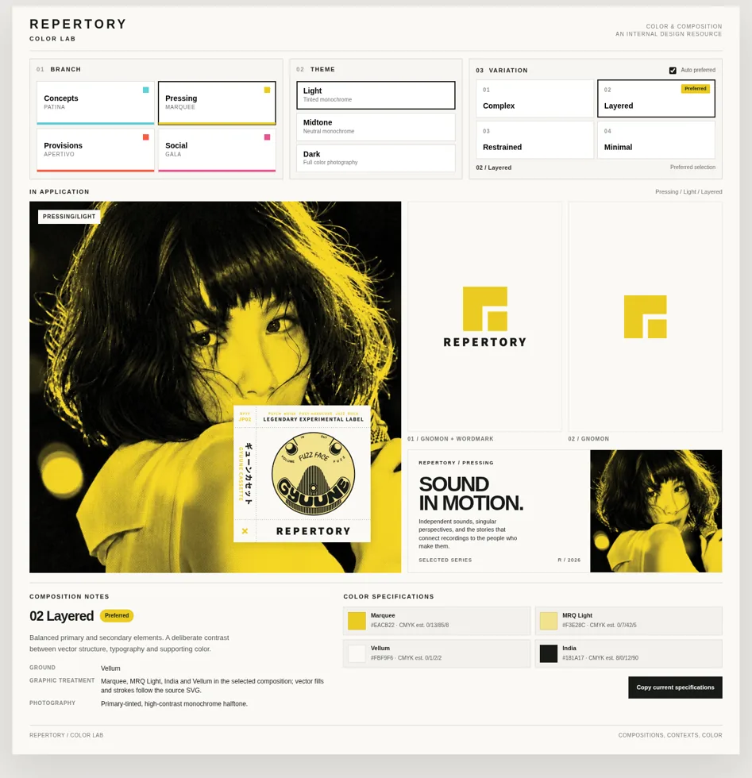

01 / Application & hierarchy
Color Lab
Navigate the four branches, Light / Midtone / Dark treatments, and four canonical composition variants. Inspect actual sticker SVG artwork with synchronized mark treatments and editorial typography, then copy active palette specifications.
Preserves the accepted fifth edition, including preferred-variant behavior and corrected figure-ground contrast.